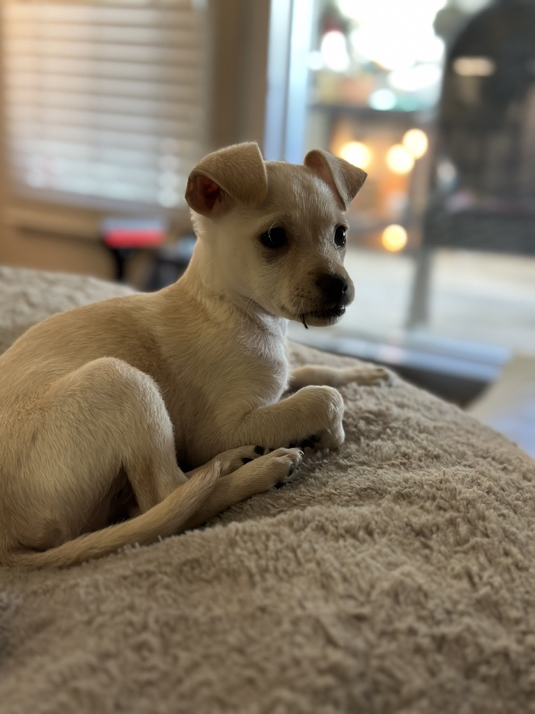

“Kick off your blog with a punchy insight or key quote that sets the tone.”
Introduction
Briefly introduce the main topic and what sparked your interest.
Backstory
Share relevant background, key moments, or turning points in a story-like format.
- Describe a major challenge or obstacle
- Highlight an “aha” moment or breakthrough
- Add a surprising or emotional twist
Lessons Learned
- Takeaway 1: What did you realize, with an example?
- Takeaway 2: How will you apply this in the future?
Final Words
Wrap it up. Call for comments, further reading, or your next step.
What You’ll Need
- List required tools, skills, or background knowledge
- Optional: link resources, downloads, or images
Step-by-Step
- Step 1: Clear instructions, with a tip if useful
- Step 2: Add sub-steps or notes if needed
- Step 3: Result, validation, or output
Encourage readers to share results or questions!
First Impressions
What grabbed you about this product/service right away?
Pros
- Highlight a strong feature or experience
- Any unique aspect that stands out
Cons
- Any frustration, limitation, or missing feature
- Room for improvement
Who Should Try It?
Recommend an audience or use-case.
Rating / Final Verdict
Give a score (stars, thumbs, or bold text), and a final one-line summary.
How It All Began
Tell a quick story of how your journey started, and your mindset back then.
Roadblocks & Breakthroughs
- Biggest challenge and how you faced it
- Support or inspiration you found
- Small wins that kept you going
Growth
How you’ve changed or grown, and what surprised you.
Advice for Others
Give encouragement or practical tips for readers on a similar path.
Frequently Asked Questions
- Q1: State a common question.
A: Answer with a tip or link. - Q2: Another practical question.
A: Clear, actionable response. - Q3: Something fun, advanced, or controversial.
A: Myth-busting or hot take.
Top Resources
- Resource 1 — what it helps with
- Resource 2 — why it’s useful
Invite readers to submit more questions or resource tips!
What Are We Building?
- Brief project description
- Why is it cool or different?
Setup
- Dependencies/tools needed
- Starter code or repo to clone
Walkthrough
- Explain a key implementation step (code snippets encouraged)
- Test and validate
- Deploy/share your finished project
Big Update!
What’s the news? Is it a feature, partnership, event, or launch?
- Date/time or timeline for what’s happening
- Who should care and why?
- Key impact or change
How Does It Affect Me?
Spell out what readers/users should do or expect next.
Get Involved/Learn More
- Link to RSVP, docs, or news
- Optional: invite feedback or shares
Meet [Guest Name]
Intro: who are they, what’s their expertise, and why is this interview interesting?
Interview
- Q: Kickoff question
A: Their answer or story - Q: Dig deeper
A: Personal or professional insight - Q: Quick-fire or “fun” question
A: Lighter answer
Best Quote
“Share a powerful, funny, or memorable quote from your guest.”
Invite readers to connect with the guest (links, socials).
Top [Number] [Items/Apps/Tips]
- Item 1: Why is it #1? Brief highlight or use-case.
- Item 2: What makes it special?
- Item 3: A personal story, example, or bonus tip.
- Item 4: (Optional)
- Item 5: (Optional)
End with: “What would you add to this list?”
[Product/Service] vs [Product/Service]
| Feature | Option A | Option B |
|---|---|---|
| Ease of Use | Describe A’s usability | Describe B’s usability |
| Cost | A’s price or value | B’s price or value |
| Unique Perk | Best thing about A | Best thing about B |
Which Should You Choose?
Give a verdict for different readers, or a winner based on use-case.
The Challenge
What was the problem or opportunity? Who was involved?
The Solution
- Step-by-step what was done
- Any pivots, discoveries, or partners
Results
- Quantitative win (metrics, sales, speed, etc.)
- Qualitative impact (feedback, morale, user story)
Quick Tips for [Skill/Goal]
- Tip 1: Your fastest actionable win
- Tip 2: A shortcut or “insider” move
- Tip 3: A mistake to avoid (brief story or warning)
Biggest Myths About [Topic]
-
Myth #1: The myth
Reality: The real story or data. -
Myth #2: The myth
Reality: Correction.
Why Do These Myths Exist?
Origins, misunderstandings, or historical context.
How to Get It Right
- Fact-based advice, study, or story
- Tip for readers to avoid the trap
Timeline: [Journey or History of X]
-
1
Origin / Early Days (Year)
Describe how it all started—what was the spark, who was involved, and why?
-
2
Key Milestone (Year)
Share a pivotal event, breakthrough, or crisis—how did it change the path?
-
3
Growth & Evolution (Year/Period)
What was the phase of rapid growth, transformation, or learning?
-
4
Where Things Stand Now
Describe the present day—what’s the status, impact, or ongoing challenge?
Deep Dive: [Big Question or Topic]
Start with a bold statement or burning question—why does this matter, and who is affected?
Core Issues & Perspectives
- Factor 1: Break down the first key variable or force at play. Provide stats, real-world examples, or quotes.
- Factor 2: Compare/contrast a second perspective, data set, or counter-argument.
- Factor 3: Show how they connect, create tension, or shape outcomes.
Analysis & Synthesis
Tie the threads together. What patterns, surprises, or takeaways emerge? What does this reveal that most people miss?
Implications & Takeaways
- What should readers or decision-makers do or consider next?
- Are there actionable tips, future predictions, or cautionary lessons?
Data Snapshot
Open with a surprising stat or finding. Why does it matter?
| Metric | Value | Context |
|---|---|---|
| Page Views | 10,245 | Highest in May |
| Signups | 670 | +14% MoM |
What The Data Shows
- Pattern or anomaly you noticed
- What factors might explain the results?
- Any outliers, caveats, or red flags?
Action Steps
Suggest what to do next, or questions to dig deeper.
What Went Wrong?
Describe the error, flop, or unexpected result honestly.
How It Happened
- Was it a process, assumption, or communication fail?
- What warning signs were missed?
- When did you realize things had gone off track?
How You Fixed (or Will Fix) It
Explain the steps taken to recover, pivot, or prevent a repeat.
Spark of Inspiration
“Share the quote, story, or moment that inspired you (or your team).”
Why It Hit Home
Describe why this resonated with you, or how it connects to your mission/goals.
How You Took Action
- First step you took, no matter how small
- How others reacted or joined in
- What changed as a result
Behind the Scenes
Take the reader backstage—show off the process, team, or setup behind your project.
The Real Workflow
- Morning routines, planning, or standups
- Tools, whiteboards, or messy sketches
- Team rituals, inside jokes, or challenges
What Makes It Work?
Share what’s unique or surprisingly hard/fun about your behind-the-scenes reality.
Community Voices
Spotlight feedback, user stories, or a roundtable discussion.
Featured Comments
- Jane D.: “This feature changed my workflow!”
- Arjun S.: “I hit a snag with X, but Y helped me fix it.”
- You? “Add your perspective here!”
What’s Next for the Community?
Announce upcoming events, features, or ways for readers to get involved or share their story.
My Current Hobbies
- Photography — capturing cityscapes, street life, and my travels.
- Cycling & exploring LA bike paths for fun and fitness.
- Trying new recipes (homemade pasta is my current obsession!)
- Building side projects: always experimenting with new frameworks.
 A glimpse at my weekends in a nutshell.
A glimpse at my weekends in a nutshell.
Recent Projects or Challenges
- Briefly describe something you built, made, or learned recently.
- Share a fun fail, unexpected result, or new favorite thing.
Always looking for new hobbies to try—drop suggestions in the comments!
Meet My Dogs!
Laikalina Madeline
Steller I
Playful, snuggly, and loves hoodie weather. If there’s a blanket, she’s in it!

Lunalina Catherine
Steller II
The queen of side-eye and cozy beds. If there’s a sunbeam, Luna’s soaking it up.
My Life With Coffee
It started as a quest for energy, but coffee turned into a full-blown obsession—from single-origin beans to perfecting pour-overs and visiting every indie café in LA.


What I'm Exploring:
- Manual brewing methods (V60, Chemex, AeroPress)
- Latte art—can finally make a heart (sometimes)
- Bean tastings & learning flavor notes
- Best coffee shops in Los Angeles
Polaroids & Instant Moments
Digital is cool, but nothing beats the magic of a real Polaroid—watching a moment appear in your hand, flaws and all.


My Favorite Instant Shots:
- Friends and family at impromptu get-togethers
- Street scenes and LA skylines
- Collecting rare film and testing new cameras
- Mini photo walls at home